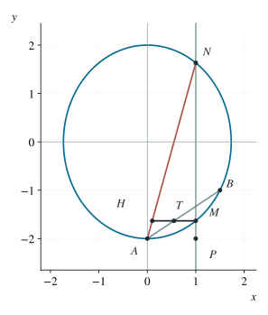

P0111 · 思维训练
椭圆弦与水平倍长构造中的定点
以顶点为参数原点，将弦端点关系化成两个参数之和恒定。
1 题目
椭圆中心为原点，坐标轴为对称轴，经过 、。定点 。过 的直线与椭圆交于不同点 ；过 作水平线交线段 于 。取点 满足 。求椭圆方程，并证明直线 经过一个定点。

选取一条满足线段条件的真实割线；水平点 平分 ，而 精确共线。
2 思路与提示
候选定点可用特殊弦寻找；证明时把纵坐标改成到水平切线 的高度，避免遗漏竖直弦。
3 解答展开 / 收起
3.1 求椭圆和水平构造
由 知纵半轴为 ，再代入 得横半轴平方为 。所以椭圆为 ，直线 为 。若 ，则 ，从而 。
3.2 选择不会丢失竖线的参数
水平线过 时为 ，与椭圆只在 相切，故不属于题设。其余所有过 的直线，包括竖线，均可写为 ，其中 。椭圆方程成为 ，联立得
两交点的高度为不同正数 ：椭圆上 ，只有 高度为零，而这条割线不经过 。由韦达定理，
3.3 将倍长点与另一端点比较
记 ，上式给出 。于是从 出发的向量为
两向量同向，因此 共线。又因 ，有 ，直线 确有定义。所以定点是 。
3.4 检查线段限制的作用
只是对允许的 加上 的限制。上述恒等式对所有合法割线端点都成立，故在题设的较小范围内当然仍成立；并未用延长线偷换线段条件。
4 方法与讨论
命题的构造使横坐标变为 ，即参数 变为 ；韦达定理恰好说明另一端点具有互补参数。这解释了倍长构造为何能产生定点，也说明“先猜定点”之后应寻找什么恒等关系。